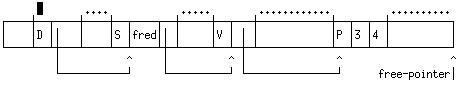

1 Mutating Data-Structures in Scheme
2 A note on persistence
2.1 Persistence across updates
2.2 Persistence across processes
3 "Dotted Pairs" and improper lists
4 The machine-level representation of data in Scheme
5 Garbage Collection in Computer Languages
6 The "Boxes and Arrows" Representation.
As well as set! which, as we have seen, is a special form which provides an assignment statment, there are two built-in procedures in Scheme which allow data-structures already built to be changed.
These operations are equivalent to the operations of assigning to the fields of a record in Pascal or the fields of a structure in C. The original value of the list ceases to exist. We speak of such operations as being mutation operations.
Consider now the following:
(define list '(5 6 7))
(define list1 list)
(example '(eq? list list1) #t)
(set-car! list 'fred
(example 'list '(fred 6 7))
(example 'list1 '(fred 6 7))
(example '(eq? list list1) #t)
What happens if we do:
(set-cdr! list list)
The term persistent is used in Computer Science in two different ways.
(1) In the theoretical discussion data-structures persistent is a property of the preservation of the original structure after some state-changing operation has been done on it. For example, the adjoin operation on sets represented as trees is commonly defined in the imperative paradigm as an operation that destroys the original tree. In this context persistence is defined to be concerned with the preservation or restoration of the original structure after the update has been made. In general, the ability to reverse changes that may have been made erroneously to data-structures is a very important one. Note that the functional paradigm provides persistence automatically. Consider the Scheme expression:
(list set (adjoin 23 set))This contains both the original set, and the set with the number 23 adjoined to it. The tree representation of sets requires us to use O(log n) space each time we adjoin an element, which means that it is quite cheap to keep old copies around.
In almost all applications of computing it is vital that some data continue to past the lifetime of the process that created it. The term persistent is also used to describe such data. Most computer languages provide direct support for only one kind of persistent data, the file.
Persistent programming languages, for example PS-Algol or Napier, take a more radical view - any data-structure can potentially persist. We say that, in a persistent programming language, persistence is orthogonal to all other properties of data-structures.
Scheme, defined by the IEEE standard, provides an intermediate approach to persistence - almost all Scheme data-structures can be written to a file by the print function in a form in which they can be read back read function.
To be practical, a persistent language requires data-structures to have attributes that are usually associated with files, for example every data-structure will need to be owned by some real or notional user. It must be possible to lock a data-structure while a complex update operation is performed upon it.
Up to now, we have always used cons in such a way that the second argument is a list. Scheme does not actually require us to do so. We can easily check out what happens:
(define l (cons 2 3))
(2 . 3)
Such an entity is called a "dotted pair". We also speak of it forming an improper list. A list-structure is proper if all rightmost elements of every sub-structure are '(). The following list is improper
'(2 3 4 . 5)
As is this:
'(2 3 (5 . 7) 9)
It is always true that (cdr (cons a b)) = b, whether b is a list or not.
In an implementation of Scheme, the entities that you can define in the language must be represented in the actual computer. Scheme data is self describing, that is the computer must be able to tell of any particular datum whether it is a number, symbol, pair, string, boolean, empty-list etc... This is usually achieved by an approach in which data-entities are tagged in various ways to indicate their type.
A possible approach to tagging is described below. It is a simplified version of the one used in the Poplog system.
Each entity in Scheme is thus referred to by a fixed-length bit-pattern, which apart from the case of short integers (and possibly short floats) is a pointer to a structure. This is normally large enough to address anywhere in the virtual memory of a process, and so is commonly 32-bits, but is 64 bits on the DEC Alpha architecture, and on some others.
The convention used in Poplog is:
This assumes byte-addressing, so that addresses of word-aligned blocks have the form 4*n. Hence small integers and addresses can be distinguished. Integer addition takes one extra operation, to remove the tag-bit.
In this system, a pair is represented by the address of a 3-field block of store. The first field is a tag which indicates that the stored item is a pair, the second holds the car value and the third holds the cdr value. (The use of a tag should be compared with the similar concept in variant records in Pascal).
Data-structures in Scheme are allocated from the heap, a large area of store devoted to storing most or all data that is created by the user. Some of the heap is in use, the rest is free. The boundary between the two is at an address pointed to by the free-pointer. To perform the operation (cons a b), the store locations following the free pointer are written into with (1) the tag indicating a pair, (2) the value a, (3) the value b. The free-pointer is then incremented past the end of the new structure which represents a pair.
For example, given a pre-existing state of the heap:
(cons 3 4) will be inserted into the heap as:
[Sorry about the little black rectangle in the figure - it was the text cursor when I captured the image - I'll redo this at some point - RJP]
Here, the 3 and 4 stand for the Scheme representation of 3 and 4, which, in UMASS Scheme will in fact be the machine integers 3*4+1 = 13 and 4*4+1 = 17.
When the free-pointer reaches the end of the heap, a garbage collection occurs. This is a system procedure which starts from certain locations that it knows the user program must be able to access - the procedure activation records (PAR's) of any currently invoked functions and the dictionary of symbols. This is illustrated in simplified form below. Here I have indicated the boundaries of individual records in the heap by small vertical lines sticking up above the top, while the areas marked with dots above them may contain many records. The dictionary of symbols is the record tagged with "D". The garbage collector starts from it, follows pointers to symbol records and from there to value records which hold the values of global variables. If we have executed (define fred (cons 3 4)) then the value record associated with the symbol 'fred will point to the record for (cons 3 4).
As the garbage collector encounters records in store it marks them with a one-bit marker, indicated here by a prime(') marker.
Any unmarked records must be inaccessible to the user. So they can be reclaimed.
Garbage collection was invented for the implementation of the LISP language in the 1950's. (Let us recall that Scheme is a rather clean dialect of LISP) Garbage collection was necessary because of the nature of store usage in LISP which was intended to support symbolic computation, for example to allow people do algebraic simplification on a computer. When you are doing symbolic computation it is difficult to predict how much space the result of evaluating a function is going to take. For example, if you perform a symbolic integration, two integrands that look quite similar

have very different integrals, and consequently have different storage requirements for representing the result.
By contrast, most applications of computing in the 1950's were concerned either with commercial data processing or with numerical computation. For much numerical computation, sophisticated patterns of store usage do not occur. It is trivial to specify how much store you need for the result of the product of two matrices. Consequently it is acceptable to separate the allocation of space to hold the result of a computation from actually doing the computation. So you have a style of computation
array C [1,n,1,m]; (* Allocate memory for the result *)
multiply_matrices(A,B,C); (* Do the matrix multiplication *)
Commercial computation did work on variable size data-sets. However the major data sets were held on magnetic tape, and only a small number of fixed-format records would be in main memory at each point in time. Typically, the operations done on these large data-sets were quite simple.
Consequently it was left to the devisers of LISP and its descendents to develop garbage collection technology. But garbage collection is an extremely valuable technology and most languages designed recently are intended to support garbage collection. Garbage collection is valuable because it prevents two kinds of errors being made which can be made if explicit allocation/deallocation are in use:
Garbage collection requires that all pointers existing in the user's program be identified and used to mark objects.
Many modern languages (e.g. ADA, Modula-3) are designed to support garbage collection, though individual implementations may not do so. Much recent work, some of it performed in UMASS under Professor Moss's direction, has been concerned with being able to do garbage collection efficiently.
It should be noted that the C and C++ languages do not support most kinds of garbage collection, although experiments have been done with "conservative collectors". These work on the principle that "if something looks like a pointer assume it is a pointer". There is however a serious performance problem with such collectors.
The Java language is a C++ derivative which IS garbage collectable.
A standard garbage collector may relocate cells in memory, making it difficult to interface with languages like C and Pascal which do not automatically relocate data once allocated. Note that this freedom of the Scheme storage control mechanism offers potential performance advantages for complex programs. A computer can perform tens of thousands of operations in the time it takes to service a page fault. Mark Reinholt has discussed this issue in his 1993 MIT PhD Thesis.
Now let us consider how we can the manipulation of list-structures within this model. We will be somewhat more abstract in that we will no longer draw an explicit picture of the heap, but will simply represent the pairs out of which list structures are made by boxes.
For the list '(5 6 7) this structure is shown below. Recall that the empty list is data-type by itself in Scheme. We have shown the value cell for the Scheme variable list1 in the diagram as well.
Note that in many implementations of Scheme, value cells for local variables are not located in the heap heap but on the control stack. [Some implementations of Scheme put Procedure Activation Records in the Heap, and dispense with the need for a stack - this is actually a more general approach].
So, if we have done (define list2 list1), we have a diagram like this, in which the value cell for the variable list2 contains a pointer to the same structure as that to be found in the value-cell for list1. In this circumstance (eq? list1 list2) ==> #t
The effect of using set-car to update a component of a list-structure can be seen below, in which the "S" tag field means "symbol".
After we do (set-car list1 'fred).
Note that symbols which are equal? are also eq?, but this is not true for other "compound" data-types like strings and lists. Scheme standardises symbols by looking each symbol up in a dictionary as it is read in. So, if we do
(set-car! (cdr list1) 'fred)
we get a pointer to the same symbol inserted in the list
list1.
This is not true of lists - every time you call cons you make a new cell that is not shared with any pre-existing list. Consider for example what happens if we do:
(define list1 (cons 5 '()))
(define list2 (cons 5 '()))
These two lists are not identical, as tested with eq?. But they are structurally equivalent as tested with equal?
(eq? list1 list2) ==> #f
(equal? list1 list2) ==> #t
(set-car! list1 34)
we get a structure that looks like this
list1 ==> '(34)
list2 ==> '(5)
The dotted pair made by (cons 5 3) is:
-------------
|P| 5 | 3 |
-------------
The improper list '(5 6 7 . 33) is represented as:
Partial sharing of structure is also possible. Suppose we do
(define list1 '(5 6 7))
(define list2 (cons 45 (cdr list1)))
We will obtain the structure:
With this structure, if we do (set-car! list2 96), the value of list1 will not be changed:
but if we do (set-car! (cdr list2 96)), the value of list1 will be changed.